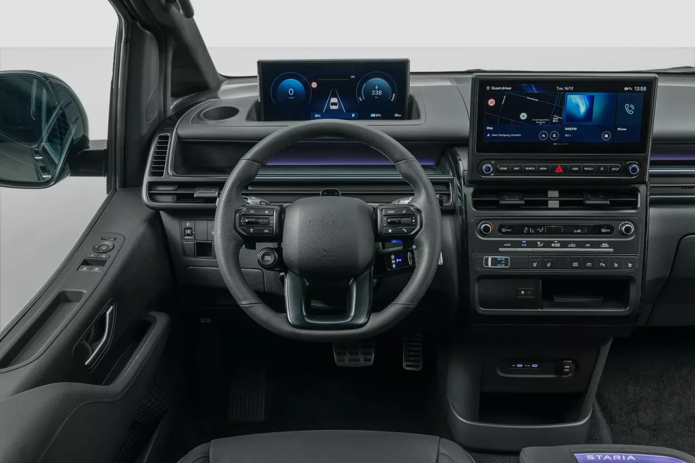

▲ 현대 스타리아 일렉트릭. 2026년 1월 브뤼셀 모터쇼에서 공개돼 4월 국내 출시됐다 ⓒ 현대자동차 제공
현대차의 대표 MPV 스타리아가 순수 전기 라인업을 갖췄습니다. 스타리아 일렉트릭은 2026년 1월 9일 브뤼셀 모터쇼에서 처음 공개된 뒤, 국내에서는 4월 23일부터 판매를 시작했습니다. 기존 하이브리드·디젤 모델과 외관 디자인 언어를 공유하면서도, 84kWh 배터리와 800V 시스템을 얹어 완전히 새로운 파워트레인으로 무장했습니다.
1. 84kWh 배터리에 800V 시스템, 20분 급속충전
스타리아 EV의 심장은 84kWh 4세대 NCM 배터리입니다. 800V 시스템을 적용해 350kW급 급속충전기를 이용하면 10%에서 80%까지 약 20분 만에 채울 수 있습니다. 모터는 현대의 EM16 유닛으로, 최고출력 160kW(218마력), 최대토크 350Nm(35.7kgf·m)을 내며 전륜구동 방식을 채택했습니다. 국내 인증 기준 총주행거리는 트림에 따라 364~387km로, 배터리 용량이 가장 가벼운 화물칸 구성(카고)일수록 더 먼 거리를 갈 수 있습니다.

▲ 스타리아 일렉트릭의 충전구. 국내형은 전·후방 듀얼 충전 포트를 적용해 주차 방향에 상관없이 충전할 수 있다 ⓒ 현대자동차 제공
2. 3인승 카고부터 11인승 라운지, 6인승 리무진까지
스타리아 EV의 가장 큰 특징은 다양한 좌석 구성입니다. 화물 운송에 특화된 카고는 3인승과 5인승 두 가지로 나뉘고, 승합·패밀리용인 투어러와 라운지는 각각 11인승, 라운지는 7인승 옵션도 함께 마련됩니다. 최상위 트림인 리무진은 6인승으로, 고급 세단 못지않은 편안한 좌석 배치를 강조합니다. 모든 트림이 같은 84kWh 배터리와 160kW 모터를 공유하기 때문에, 좌석 구성과 내장재 수준에 따라 가격이 갈리는 구조입니다.
| 트림 | 인승 | 주행거리 | 가격 |
|---|---|---|---|
| 카고 3인승 | 3인 | 387km | 5,792만원 |
| 카고 5인승 | 5인 | 387km | 5,870만원 |
| 투어러 11인승 | 11인 | 371km | 6,029만원 |
| 라운지 11인승 | 11인 | 371km | 6,549만원 |
| 라운지 7인승 | 7인 | 364km | 약 5,879만~6,731만원 |
| 리무진 | 6인 | 364km | 약 8,482만~8,787만원 |

▲ 스타리아 일렉트릭의 실내. 더 뉴 스타리아와 동일한 12.3인치 클러스터·ccNC 인포테인먼트, H 모스부호 스티어링 휠이 적용됐다 ⓒ 현대자동차 제공
3. 내연기관 스타리아와 무엇이 다를까
외관은 더 뉴 스타리아와 패밀리룩을 공유하지만, EV 전용 요소도 곳곳에 반영됐습니다. 외장형 액티브 에어 플랩과 EV 전용 17인치 휠, 흡음 타이어가 적용돼 공력 효율과 정숙성을 끌어올렸습니다. 실내는 12.3인치 클러스터와 ccNC 기반 인포테인먼트 시스템, H 모스부호를 형상화한 스티어링 휠 등 더 뉴 스타리아 하이브리드·디젤과 동일한 최신 인테리어를 그대로 가져왔습니다. 현대차 최초로 전·후방 듀얼 충전 포트와 V2L(차량을 외부 전원으로 활용하는 기능)을 함께 지원하는 점도 특징입니다.

▲ 스타리아 일렉트릭 리무진의 2열 좌석. 리클라이닝과 레그레스트를 갖춘 프리미엄 시트와 파노라마 선루프가 눈에 띈다 ⓒ 현대자동차 제공
4. 왜 지금 전동화된 스타리아가 필요할까
스타리아는 이미 카니발과 함께 국내 대형 MPV 시장을 양분해온 모델입니다. 여기에 전기 버전을 더한 배경에는 법인·상용 수요가 있습니다. 카고 트림은 배송·화물 운송 업계를 겨냥한 전기 상용밴 수요를, 라운지·리무진 트림은 의전·공항 픽업 등 프리미엄 이동 수요를 노립니다. 같은 800V 아키텍처를 쓰는 상용 전기차 ST1과 파워트레인을 공유해, 현대차 상용 전동화 라인업의 승용 버전 격이라고 볼 수 있습니다.
5. 정리 — 구매 전 체크포인트
스타리아 EV는 5,792만원부터 시작해 최상위 리무진 트림은 8천만원대 후반까지 올라가는, 결코 저렴하지 않은 전기 MPV입니다. 다만 350kW 급속충전 기준 20분이라는 빠른 충전 속도와 트림별로 세분화된 좌석 구성은 동급에서 찾기 어려운 강점입니다. 카고 트림은 사업용 전기차 보조금 대상 여부를, 라운지·리무진 트림은 실제 전시장 방문을 통한 좌석감 확인을 추천합니다. 정확한 개별소비세 감면 후 실구매가와 지역별 보조금은 계약 전 딜러를 통해 다시 한번 확인하는 것이 좋습니다.